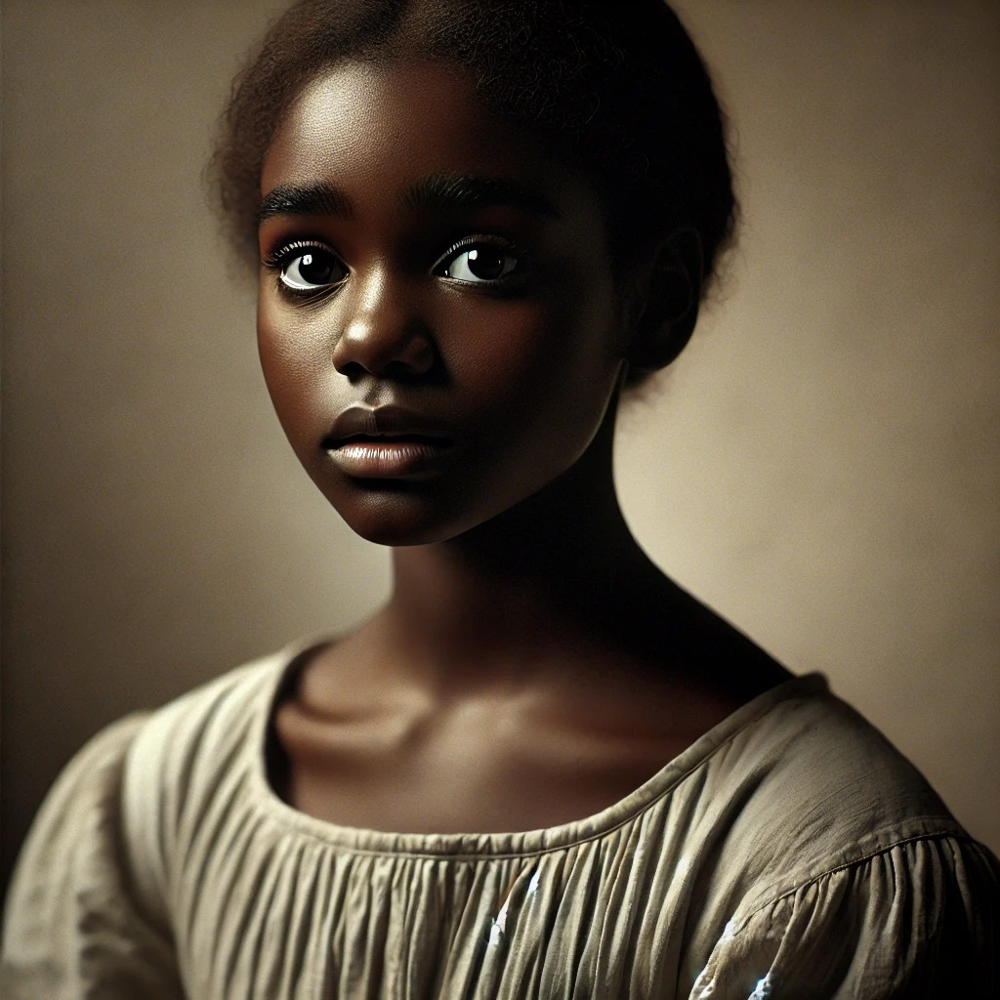

Damião
- Jovem que não queria seguir a vida religiosa;
- Foge Do Seminario;
- Esperto e manipulador.

Sinhá Rita
- Viúva de 40 anos, mas com aparência jovem;
- Ensinava garotas a fazer cravo, renda e bordado;- Apessoada, viva e patusca, porém, extremamente brava;
- Autoritária;
- Tem uma relação romântica indefinida com João Carneiro.

Lucrécia
- Menina de 11 anos;
- Negra e Magra;
- Aluna de SInhá Rita;
- Agredida física e verbalmente ao longo da narrativa.

João Carneiro
- Padrinho de Damião;
- "Moleirão sem vontade";
- Considerado inútil;
- Tem uma relação romântica indefinida com Sinhá Rita;
- Submete-se as vontades de Sinhá Rita.